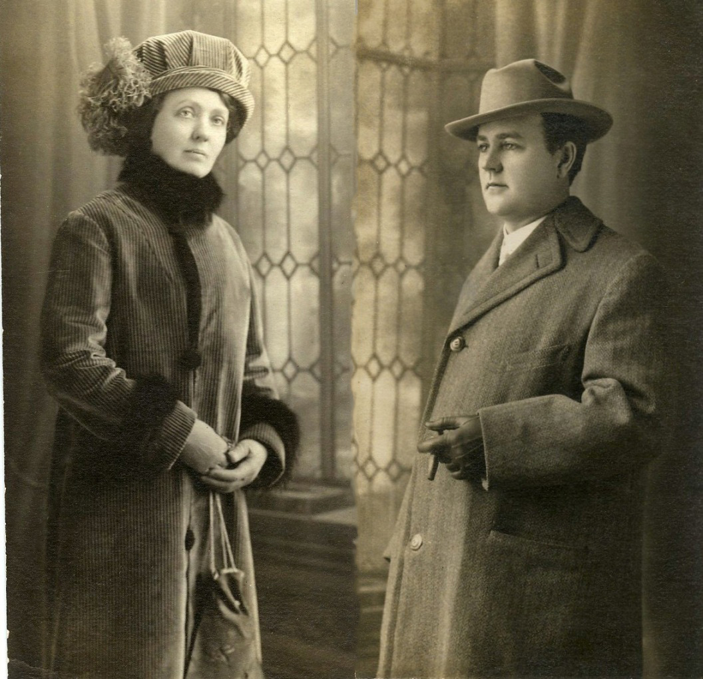
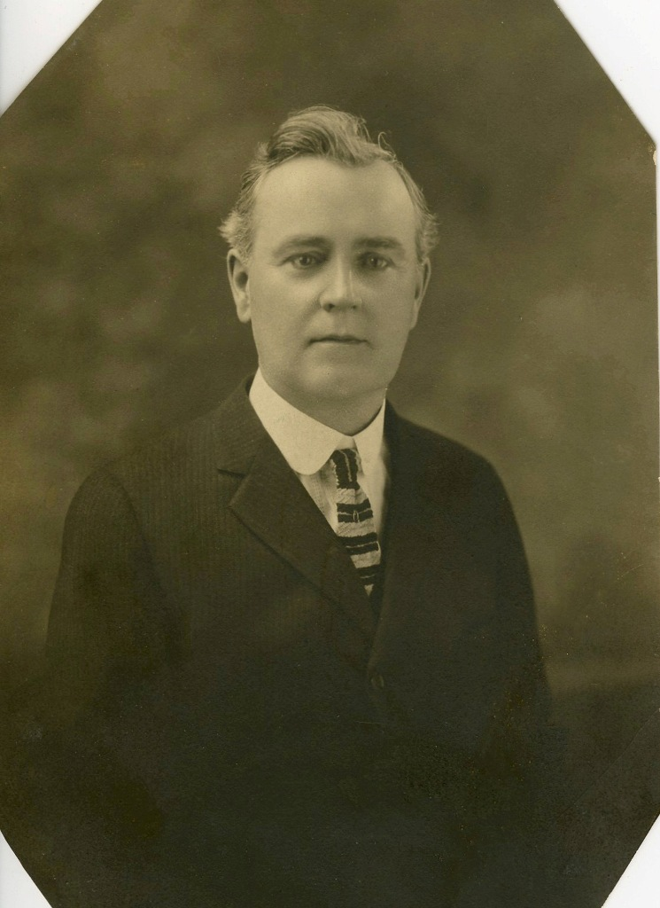
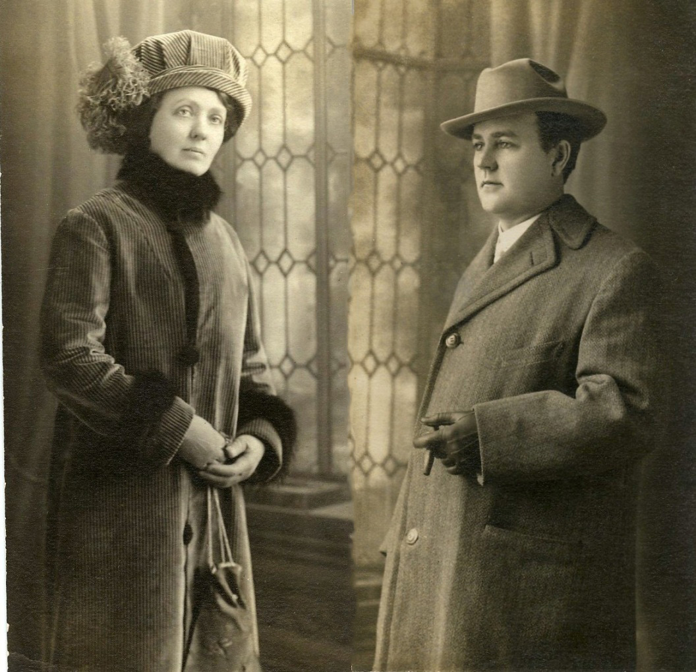
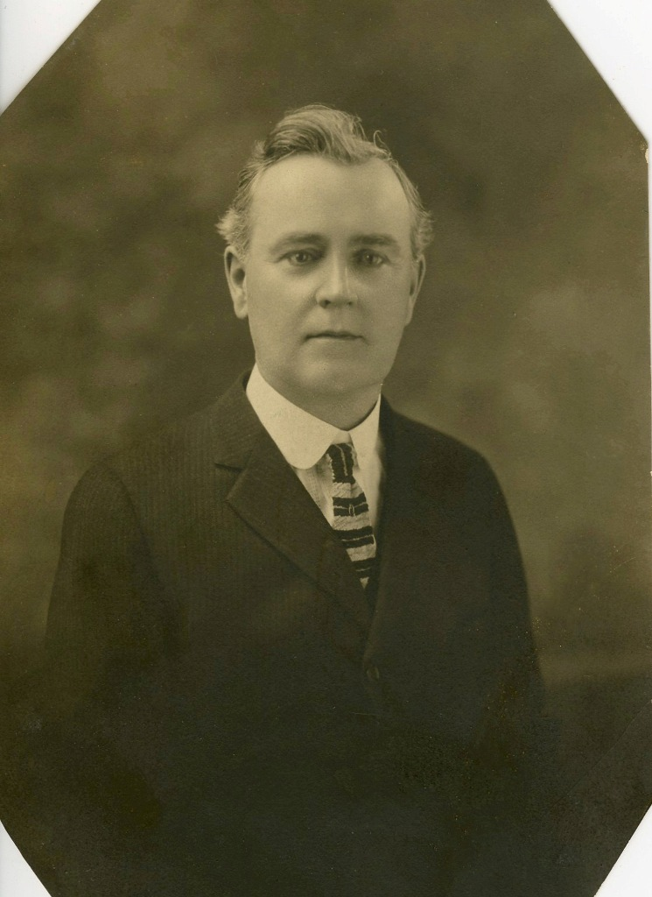

Seymour Allen "Al" MILLER
- Born: 2 Aug 1871, Indiana
- Marriage (1): LeOna "Onie" RAMSEY on 24 Dec 1894 in Goshen, Elkhart County, Indiana
- Died: 1 Feb 1948, Los Angeles, Los Angeles County, California at age 76

 General Notes: General Notes:
CHILDREN: Seymour "Al" and LeOna Ramsey bore only one child
OCCUPATIONS: Pressman; House Painter
RESIDENCES: Goshen, Elkhart County, IN;
Chicago, IL (as per the 1910 U.S. Census, the Seymour & LeOna Miller family lived next door to the Chris & Rose Swart family -- Rose was Seymour's sister);
Chicago, IL (1920 U.S. Census);
Republic, Greene County, MO (1930 U.S. Census);
Burbank, Los Angeles County, CA (1940's) -- 904 Keeler Street; the house was later destroyed in order to build the Golden State Freeway
Research Notes:
-- Photos courtesy of G.A. Miller
-- Additional Photos of Al Miller (https://flic.kr/s/aHskbGxwBK)
-- 1880 U.S. Census (Elkhart, Elkhart County, Indiana; Roll: 275; Family History Film: 1254275; Page: 409D; Enumeration District: 038; Image: 0640) (NOTE: 1880 U.S. Census incorrectly lists Seymour's birthplace as Pennsylvania, and incorrectly lists his parents' birthplace as Pennsylvania)
-- Indiana Marriage Collection (1800-1941)
-- Find A Grave, Memorial # 94666058
-- 1880 U.S. Federal Census
-- 1900 U.S. Federal Census
-- 1910 U.S. Federal Census
-- 1920 U.S. Federal Census
-- 1930 U.S. Federal Census
Seymour married LeOna "Onie" RAMSEY, daughter of Benjamin Summerfield RAMSEY and Clara A. PEPPLE, on 24 Dec 1894 in Goshen, Elkhart County, Indiana. (LeOna "Onie" RAMSEY was born on 9 Oct 1874 in Indiana and died on 18 May 1955 in Glendale, Los Angeles County, California.)
|

") 
